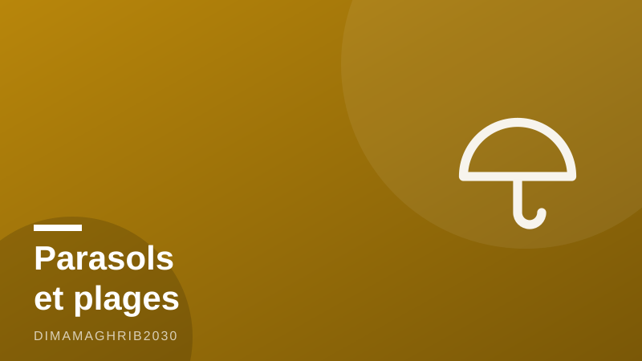

« Le sable est gratuit » : ce que les loueurs de parasols ne veulent pas que vous sachiezThe Sand Is Free: A Moroccan's Guide to Beating the Beach Parasol Racket

Chaque été, c'est le même cinéma. Vous arrivez à Martil ou à Cabo Negro avec votre glacière et votre natte, et avant même que vos pieds touchent le sable, un monsieur surgit : « C'est réservé ici, khouya. » Réservé par qui ? Par lui. Depuis quand ? Depuis ce matin. J'ai grandi avec ces plages, et je vais vous dire ce que ce monsieur ne dira jamais : le sable est gratuit. Il l'a toujours été.
L'arnaque parasol, version 2026
On ne parle plus de quelques dirhams. Comme le rapporte Bladi.net, sur certaines plages du nord, des opérateurs illégaux facturaient 500 à 700 dirhams par jour — environ 45 à 65 euros — pour un simple emplacement avec parasol. Le prix d'une nuit d'hôtel, pour de l'ombre sur un terrain qui appartient à tout le monde. L'arnaque parasol à Martil et ailleurs reposait sur une seule chose : que vous ne connaissiez pas vos droits.
Car juridiquement, c'est limpide. Le domaine public maritime — la plage, donc — appartient à l'État, c'est-à-dire à nous tous. Comme l'a précisé Médias24, les communes ont formellement recadré les choses avant la saison : parasols imposés, chaises payantes obligatoires et sable « réservé » sont illégaux sur le domaine public maritime. Les associations de protection du consommateur, citées par Bladi.net, ont déclaré la guerre ouverte aux loueurs illégaux avec une formule que j'adore : ils « n'ont aucun droit de vous faire payer le sable ».
L'été où l'État a dit stop
La bonne nouvelle, c'est que 2026 est l'été du grand ménage contre les squatteurs de plages. Le wali de Casablanca-Settat a imposé une interdiction stricte de toute exploitation commerciale des plages pour cet été, garantissant l'accès libre et gratuit, comme l'ont rapporté Visa-Algérie et Algérie Nomades. Et dans le nord, Le360 a documenté des opérations de saisie de chaises et parasols à Fnideq, Cabo Negro, Martil, Oued Laou, Azla et Amsa, avec une surveillance des plages renforcée. Résultat : sur ces côtes, vous trouverez enfin des zones où planter votre propre parasol sans qu'on vous tombe dessus.
Mes conseils d'ami, concrètement
Apportez votre matériel. Un parasol coûte 80 à 150 dirhams au souk et vous sert dix étés. C'est l'investissement le plus rentable de vos vacances.
Si vous voulez louer — parfois c'est pratique, je l'admets — un prix honnête pour un parasol et deux chaises tourne autour de 20 à 50 dirhams la journée, négocié avant de vous asseoir. Au-delà, souriez et partez.
Pour refuser poliment, une phrase suffit : « Merci, on a le nôtre » ou, si on insiste, « La plage est publique, la commune l'a confirmé. » Calme, sourire, fermeté. Ne payez jamais « l'emplacement » seul : personne ne peut louer du sable.
Si on vous menace ou vous bloque, éloignez-vous et signalez : la police touristique, les autorités locales sur place (il y a des patrouilles cet été), ou le 19. Prenez une photo si nécessaire, sans confrontation.
Marchez cinq minutes. Les rangées de parasols imposés occupent toujours l'accès principal. Cent mètres plus loin, la zone libre vous attend — même mer, même sable, zéro dirham.
Les plages publiques gratuites du Maroc portent bien leur nom. Cet été, pour une fois, la loi et le bon sens rament dans le même sens. Profitez-en. Et si quelqu'un vous demande 500 dirhams pour du sable, dites-lui que le sable, justement, ne se vend pas.
Every summer, same movie. You arrive at Martil or Cabo Negro with your cooler and your straw mat, and before your feet even touch the sand, a man materializes: "This area is reserved, my friend." Reserved by whom? By him. Since when? Since this morning. I grew up on these beaches, and let me tell you what that man will never tell you: the sand is free. It always has been.
The parasol racket, 2026 edition
We're not talking pocket change anymore. As Bladi.net reported, on some northern beaches illegal operators were charging 500 to 700 dirhams a day — roughly 45 to 65 euros — for a single parasol spot. Hotel-room money, for shade on land that belongs to everyone. The Morocco beach parasol scam has always run on one fuel: visitors not knowing their rights.
Because legally, this is crystal clear. The public maritime domain — the beach, in plain words — belongs to the state, which means it belongs to all of us. As Médias24 explained, communes formally restated the rules before this season: imposed parasols, mandatory paid chairs and "reserved" stretches of sand are illegal on the public maritime domain. Consumer-protection groups, quoted by Bladi.net, declared open war on illegal parasol rentals with a line I want printed on a t-shirt: these operators "have no right to make you pay for the sand."
The summer the state said enough
Here's the good news: 2026 is the summer of the great cleanup. The wali of Casablanca-Settat imposed a strict ban on all commercial exploitation of beaches this season, guaranteeing free access for everyone, as Visa-Algérie and Algérie Nomades reported. Up north, Le360 documented seizure operations — chairs and parasols confiscated — at Fnideq, Cabo Negro, Martil, Oued Laou, Azla and Amsa, with beach surveillance stepped up all along the coast. Which means that on these shores, for the first time in years, you can actually plant your own umbrella without someone descending on you.
My honest, friend-to-friend advice
Bring your own parasol. One costs 80 to 150 dirhams at any souk and lasts ten summers. Best return on investment of your entire holiday, I promise.
If you actually want to rent — sometimes it's just convenient, I get it — a fair price for a parasol and two chairs is around 20 to 50 dirhams for the day, agreed before you sit down. Anything above that, smile and keep walking.
To refuse politely, one sentence does it: "Thanks, we brought our own." If they push: "The beach is public — the commune confirmed it." Calm voice, smile, firm feet. And never pay for the "spot" alone; nobody on earth can rent you sand.
If anyone threatens or blocks you, step away and report it: the tourist police, the local authorities patrolling the beach this summer, or 19, the national police line. A discreet photo helps; a confrontation doesn't.
Walk five minutes. The rows of imposed parasols always colonize the main entrance. A hundred meters down, the free zone is waiting — same sea, same sand, zero dirhams. That's my number one insider tip for free public beaches in Morocco.
This summer, for once, the law and common sense are swimming in the same direction. Enjoy it. And if anyone asks you for 500 dirhams for sand, tell them from me: the sand is not for sale.